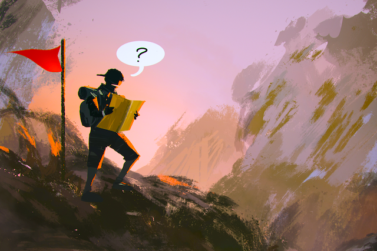

Even the most charismatic people you know, whether in person or as celebrities, have days when they feel lost in life and isolated from everyone else. While it is comforting to know we are not alone in our feelings, the question remains:
What should we do when we are feeling lost and lonely?
Here are things to remember when you’re feeling lost in life
The truth is that there are times when you just need to be alone. If you've always been used to interacting with others, this may be difficult. Learning to be alone and comfortable in your own skin, on the other hand, will give you confidence and self-reliance. When we seek constant companionship, we deprive ourselves of the opportunity to become self-sufficient.
You've probably heard the saying, "You have to know where you've been to know where you're going." Loneliness can also be used as a life signal to indicate that you are looking for something. True soul searching happens when we are alone. Remember that there is more to life than what you are experiencing.
Being constantly in the company of others, while sometimes comforting, can often serve as a distraction when we need to face the reality of a situation. Solitude gets right to the point and forces you to confront the issue at hand. Consider it a blessing that can act as a catalyst to make things right!
Instead of wallow in self-pity, as many people do when they are lonely, try viewing your situation as a newfound freedom. Most people are constantly seeking approval for their points of view. Try to relax and enjoy the fact that you don't have to rely on everyone you care about to support your decisions.
Perhaps you are feeling lonely and confused because your life circumstances have taken you away from the persona that others recognize as you. Perhaps the new you is vastly different from the old you. Recognize that life is about change and how we respond to it. It's fine if you're not the person you used to be.
Those who are feeling isolated and alone will often develop a defeatist attitude. They will perform subpar work because their self-esteem is low and they don't care. Never let this feeling rob you of your self-esteem! Do your best at all times, and when you emerge from this dark period, others will admire how you remained determined in the face of adversity. And if you want to live your best life, you must do ONE thing: get out of your comfort zone.
It's common to feel as if we're the only ones who have ever felt this way. We believe this because, during our distress, we silently observe others around us who appear to be fine in every way. The truth is that we can't possibly know about the difficulties of those around us unless they choose to share them. We've ALL felt this agony! Try confiding in someone you trust and asking them how they dealt with similar feelings when they were younger. You might be surprised by what you discover.
Everyone experiences a sense of being lost and lonely at some point in their lives, but it usually only lasts a short time. Most people will admit to being in a "funk" at some point in their lives. However, if the problem persists for a longer period of time than you believe it should, don't ignore it. When your ability to reason and consider things rationally deteriorates, do not dismiss the problem as unimportant. Seek medical assistance.
Loneliness and a sense of being lost can be extremely painful and difficult to deal with in many ways. However, if we acknowledge and act on our feelings, they can serve as a catalyst for change in our lives. Above all, value your mental health and don't undervalue its importance. Seek professional help if you can't tell the difference between a sense of freedom and a sense of despair.